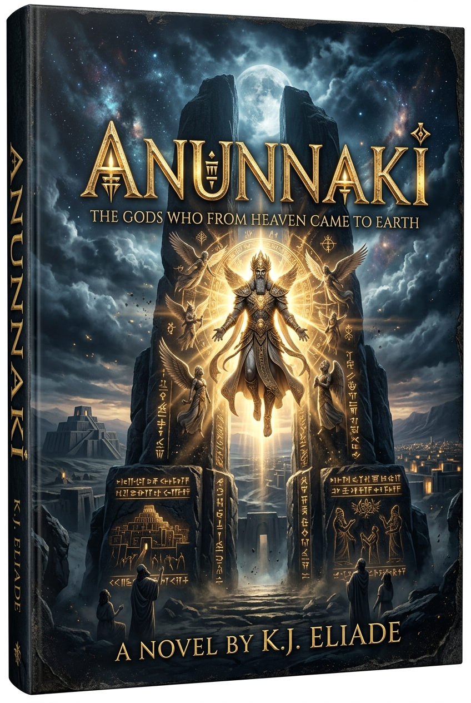

About the Author
Learn about Unniraveendra's literary journey, inspirations, and background.
Read Biography →Worlds imagined beyond boundaries. Myths unearthed across forgotten millennia. Step into the official universe of the novel series Anunnaki.

അനുനാകി - 1 · അടിമകളുടെ ഉടയോൻ
“അവർ വരുന്നു... ദൈവമായി, ഒടുവിൽ ഉടയോൻ ആയി.”
മനുഷ്യചരിത്രത്തിന്റെ ഇരുണ്ടതും ദുരൂഹവുമായ അധ്യായങ്ങളിലേക്ക് വായനക്കാരനെ
കൂട്ടിക്കൊണ്ടുപോകുന്ന ഒരു ഫിക്ഷൻ എപ്പിക് ആണ് അനുനാകി. പുരാണം, ചരിത്രം, പ്രാചീന
സംസ്കാരങ്ങൾ, ദൈവസങ്കൽപ്പങ്ങൾ, മനുഷ്യന്റെ ഉത്ഭവത്തെക്കുറിച്ചുള്ള ചോദ്യങ്ങൾ എന്നിവയെ
സാങ്കൽപ്പികമായ ഒരു മഹാകഥയുടെ പശ്ചാത്തലത്തിൽ കൂട്ടിയിണക്കുകയാണ് ഈ സീരീസ്.
ആരാണ് അനുനാകികൾ?
അവർ ദൈവങ്ങളായിരുന്നോ?
മനുഷ്യരുടെ സ്രഷ്ടാക്കളായിരുന്നോ?
അതോ മനുഷ്യചരിത്രത്തിന് പിന്നിൽ മറഞ്ഞുകിടക്കുന്ന മറ്റൊരു ശക്തിയോ?
ഈ ചോദ്യങ്ങൾക്ക് ചുറ്റുമാണ് കഥയുടെ ലോകം വികസിക്കുന്നത്.
Anunnaki: Adimagalude Udayon is an epic mythological fiction that
explores the
mysterious origins of gods, humanity, power, and an ancient civilization hidden beyond
history.
"Stories are portals across ages—connecting ancient myth with the boundless horizons of human imagination."
Unniraveendra is a passionate storyteller and novelist whose writing delves into ancient lore, cosmic origins, and the human spirit under extraordinary circumstances. Through meticulous world-building, his narratives build bridges between rich history and speculative fiction.
Dive into essays, event archives, photography collections, and literary updates from Unniraveendra.
Learn about Unniraveendra's literary journey, inspirations, and background.
Read Biography →Reflections on storytelling, world-building notes, and published essays.
Explore Writings →Portraits, book launches, writing space snapshots, and creative moments.
View Photo Gallery →